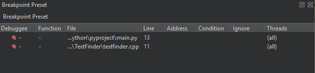
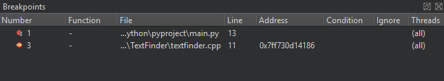

Setting breakpoints
You can associate breakpoints with:
- Source code files and lines
- Functions
- Addresses
- Throwing and catching exceptions
- Executing and forking processes
- Executing some system calls
- Changes in a block of memory at a particular address when an application is running
- Emitting QML signals
- Throwing JavaScript exceptions
A breakpoint interrupts the application every time the application reaches its location unless you specify a boolean condition for it. The breakpoint evaluates the expression each time the application passes it, and the application stops only if the condition evaluates to true.
Unclaimed and claimed breakpoints
Breakpoints come in two varieties: unclaimed and claimed. An unclaimed breakpoint represents a task to interrupt the debugged application and passes the control to you later. It has two states: pending and implanted.
Unclaimed breakpoints are stored as a part of a session and exist independently of whether an application is being debugged or not. They are listed in the Breakpoint Preset view and in the editor using the (Unclaimed Breakpoint) icon, when they refer to a position in code.

When a debugger starts, the debugging backend identifies breakpoints from the set of unclaimed breakpoints that might be handled by the debugged application and claims them for its own exclusive use. Claimed breakpoints are listed in the Breakpoints view of the running debugger. This view only exists while the debugger is running.
When a debugger claims a breakpoint, the unclaimed breakpoint disappears from the Breakpoint Preset view, to appear as a pending breakpoint in the Breakpoints view.
At various times, attempts are made to implant pending breakpoints into the debugged process. Successful implantation might create one or more implanted breakpoints, each associated with an actual address in the debugged breakpoint. The implantation might also move a breakpoint marker in the editor from an empty line to the next line for which the actual code was generated, for example. Implanted breakpoint icons don't have the hourglass overlay.
When the debugger ends, its claimed breakpoints, both pending and implanted, will return to the unclaimed state and re-appear in the Breakpoint Preset view.
When an implanted breakpoint is hit during the execution of the debugged application, control is passed back to you. You can then examine the state of the interrupted application, or continue execution either line-by-line or continuously.

See also Add breakpoints, How To: Debug, Debugging, Debuggers, and Debugger.